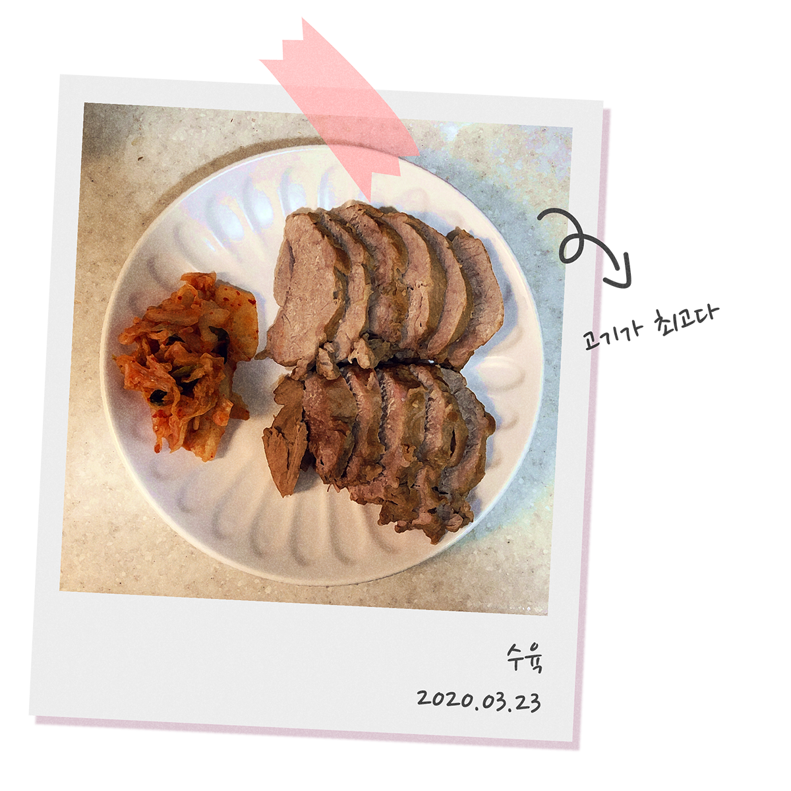

나의 생활패턴이 망가지기 시작한건 입시를 시작했을때 부터다. 학업으로 인한 수면 부족과 인스턴트 위주의 식사 때문에 고등학교 입학 이후부터 약 20kg정도 찌고, 작년부터는 불면증까지 생겼다.
그동안 다이어트는 잠깐 하고 마는 것이라고 생각했고, 다이어트를 해도 일주일을 넘겨본 적이 없을 정도로 나는 먹는 것을 좋아하고 움직이지 않았다. 이런 나에게 다이어트가 습관이 되어 계속 지속 가능하게 되면 그래도 여태까지 했던 수많은 다이어트보다 긍정적인 결과가 나오지 않을까?라는 생각이 들어 작은 습관부터 성형해보기로 했다.
맛있는 음식을 먹는다는 만족감과 건강을 둘 다 챙기기 위해 내가 만든 작은 습관이다.
'다이어트 성공의 핵심은 80%가 식단'이라는 말이 있을 정도로 다이어트에 식단 관리는 필수지만, 세상에 널리고 널린 게 맛있는 음식인데 이것들을 꾸역꾸역 참아 아무리 건강한 몸이 된다고 해도 참아야 하는 나의 정신건강은 역으로 더 안 좋아질 것이므로..
다이어트를 위해 여러 가지를 공부했을 때 새롭게 알게 된 사실이 하나 있다.
살이 찌는 원리를 간단히 정리해보면 우리 몸은 탄수화물을 섭취했을 때 그것을 포도당으로 변화시키는데, 포도당은 주 에너지원이 되어 신체에서 쓰인다. 포도당을 모두 에너지원으로 사용하면 문제가 되지 않지만, 탄수화물을 과다 섭취하여 포도당이 남게 되면 이것이 지방으로 변환되어 우리 몸에 남게 된다. 이것이 살이 찌는 원인이었다.
아무리 다이어트를 한다고 해도 평생 밥을 안 먹고 살 수는 없었다. 그래서 시도한 방법은 밥 반 공기는 그대로 먹고, 남은 반 공기는 잘게 썬 양배추와 양파로 채우는 것이었다. 이렇게 하면 탄수화물 섭취도 줄이게 되고, 밥이 반 공기가 있기 때문에 밥 한 공기를 먹은 기분이 들 것 같았다.
야채밥은 맨밥으로 먹는 것 보다 다른 재료들과 함께 볶음밥처럼 먹는게 더 맛있어서 나는 그동안 볶음밥으로 많이 해먹었다.요리 할때 이 야채밥을 베이스로 탄수화물, 야채 섭취량만 신경 쓰고 칼로리 등 다이어트에 스트레스 받는 요소는 일절 신경 쓰지 않았다. 어차피 살은 빠질 테니까!

디저트를 마음껏 못 먹는 게 조금 괴로울 뿐이지, 저탄수화물 식단만 지키면 되니까 평소에 먹는 것들은 다이어트 음식이라는 생각은 별로 들지 않았다. 그리고 2주 중 하루는 먹고 싶은 음식을 먹는 날로 만들어서 그동안 음식 때문에 받는 스트레스는 거의 없었다.
다이어트를 시작하고 그날그날 무엇을 먹었는지, 오늘은 뭘 했는지 매일 일기를 쓴다.어떻게 써야 할 지 딱히 제한을 두지 않아서 아무말 대잔치인 일기지만, 다이어트는 혼자만의 싸움이라 잘하고 있다고 격려해 주는 것도 나밖에 없으니까 되도록이면 좋은 말만 쓰고 있다.
습관성형을 시작한 지 3개월 정도 됐지만 결과는 놀라웠다.
예전보다 훨씬 몸이 가벼워진 것을 느끼며 하루를 시작하고, 내일은 더 건강해질 것이라는 생각을 하며 잠든다. 가장 크게 느낀 건 나도 마음 먹으면 할 수 있다는 사람이라는 걸 알게 된 것이다.